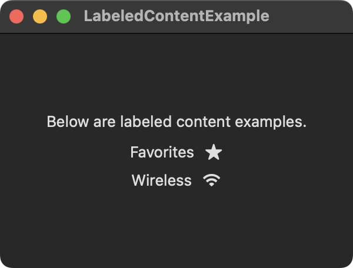

The LabeledContent view is comprised of a label and content. Usually, it displays the label on the leading edge and the content on the trailing edge. This is similar to using an HStack containing two views.

import SwiftUI
struct ContentView: View {
var body: some View {
VStack {
Text("Below are labeled content examples.")
LabeledContent("Favorites") {
Image(systemName: "star.fill")
}
LabeledContent("Wireless") {
Image(systemName: "wifi")
}
}
.frame(width: 300, height: 200)
}
}
Swift Programming for macOS © 2025
Built by Gavin Wiggins